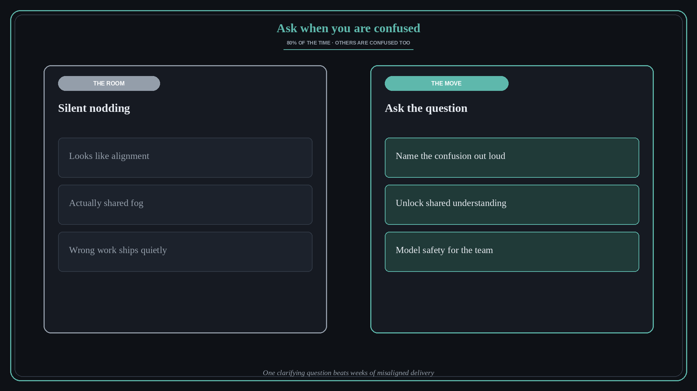

Ask when confused — others are too
Source: Molly Graham (@molly_g)
original post
What it claims
Eighty percent of the time when you are confused in a meeting, other people are confused too. Ask the question. Silence is often shared fog, not shared understanding.
Why it matters for a PO
POs sit in dense rooms — architecture reviews, stakeholder syncs, planning. Fear of looking slow keeps the fog. Asking one clarifying question often unlocks the room and prevents weeks of misaligned delivery. That is leadership, not interruption.
3 takeaways
- Treat your confusion as a signal that the room may be foggy — not as a private failure.
- One clear question beats silent nodding that ships the wrong thing.
- Normalize asking; you model psychological safety for the team.
Practice this week
In your next confusing meeting, ask one specific clarifying question out loud before the meeting ends. Note whether others thank you or pile on — usually they do.